Anime Scenes
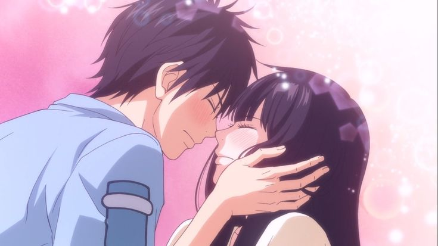
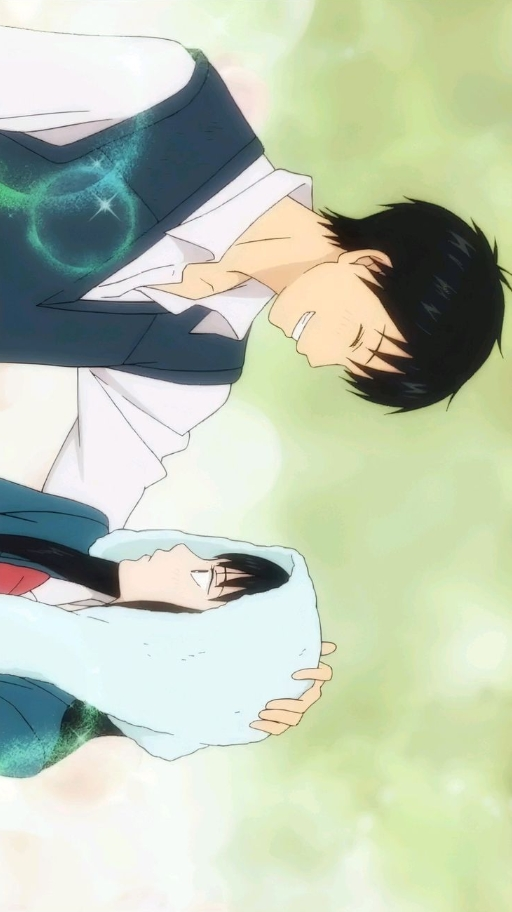
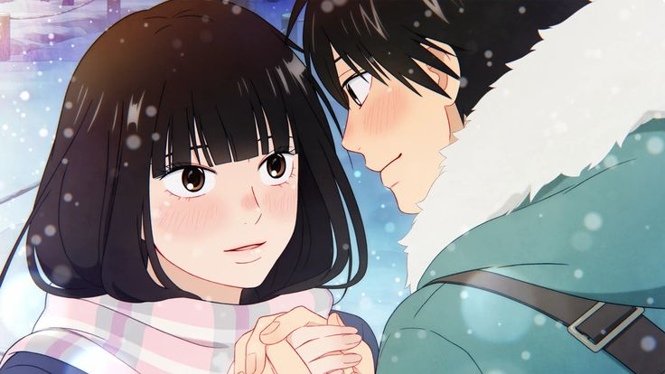
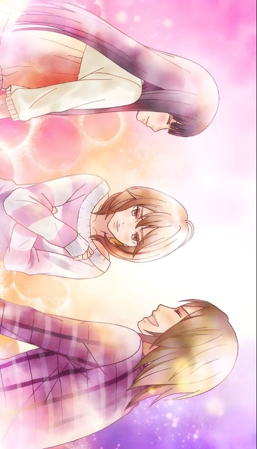
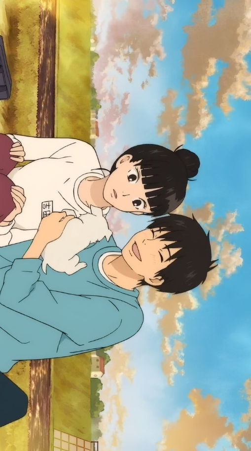
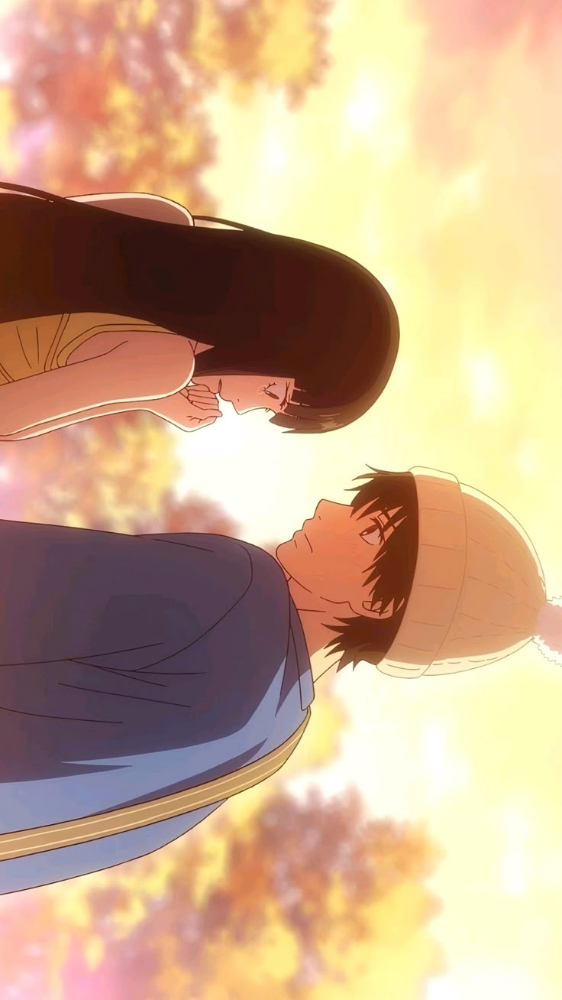
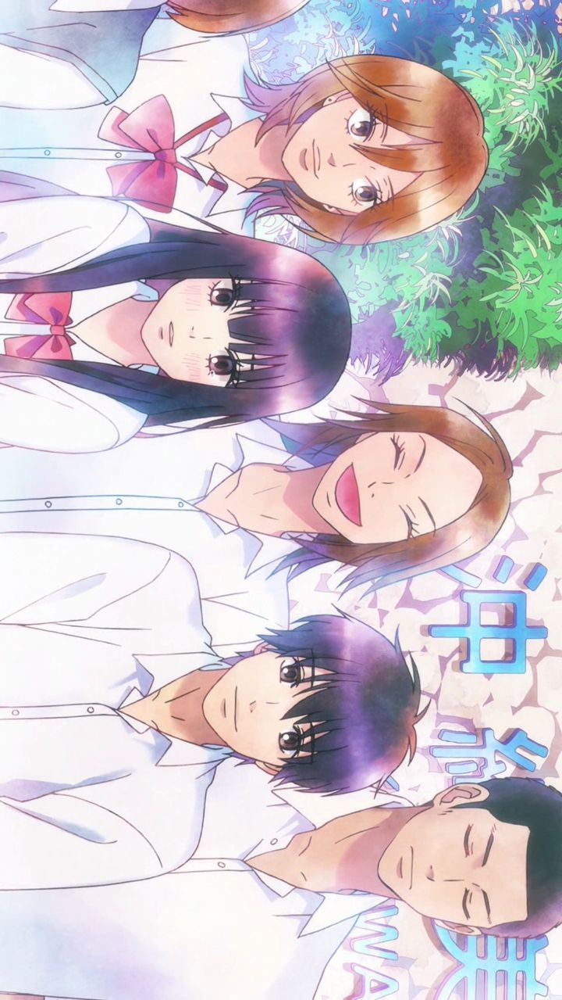
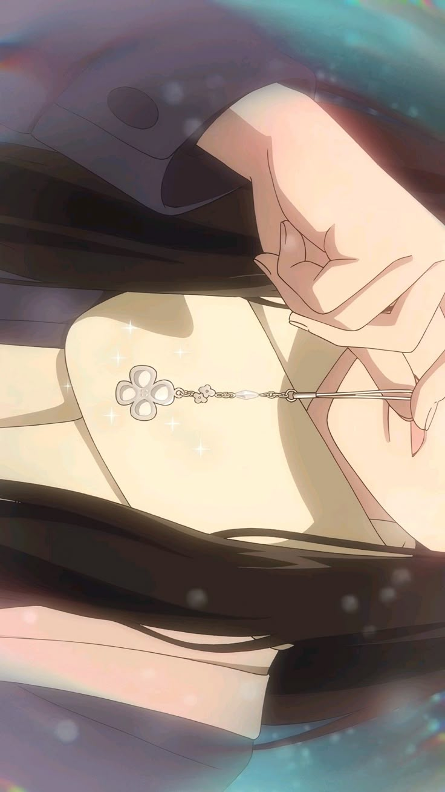
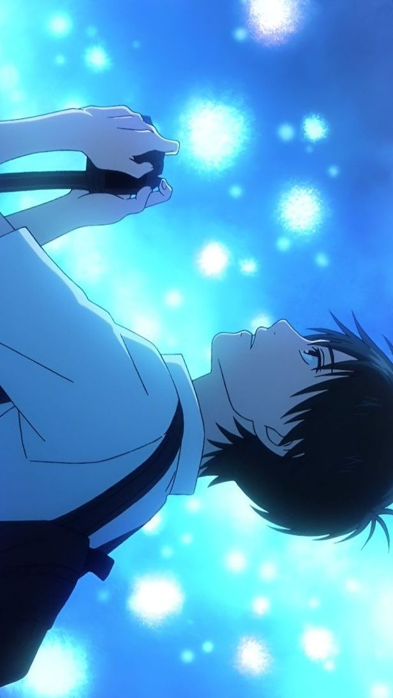
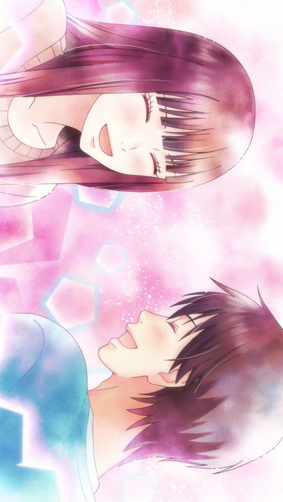
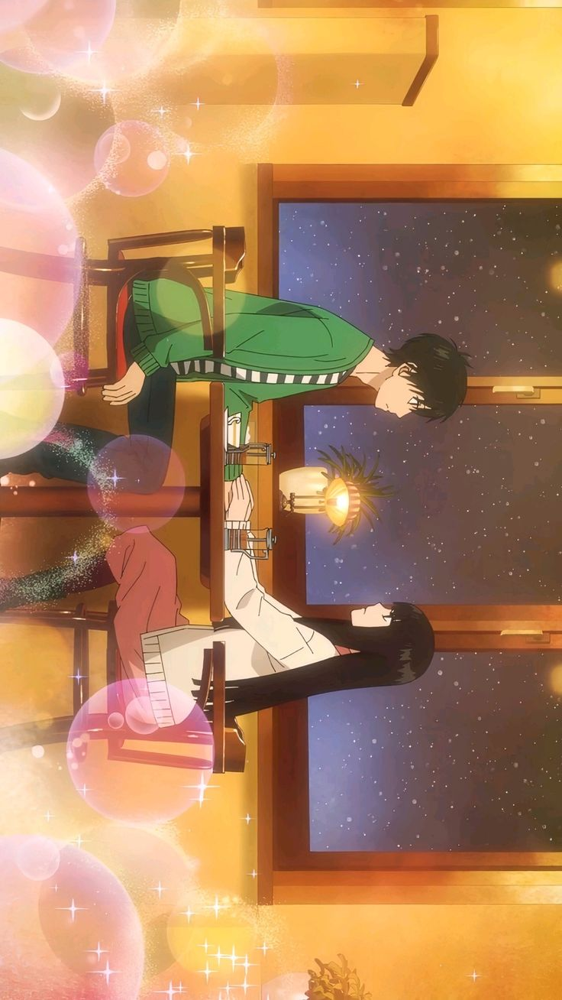
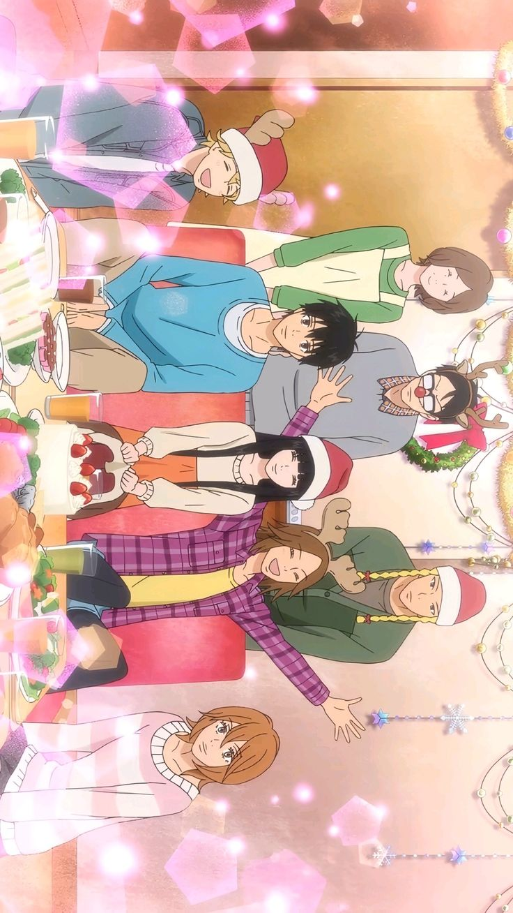
“No matter how scary things seem, you have to take a step forward.”
Anime Studio: Production I.G
Director: Hiro Kaburagi
Producer: Atsushi Itō
Distributor: NTV, Viz Media
Rating: ★ 8.0 / 10
Source: Manga
Release Date: October 7, 2009
Episodes: 37 Episodes
Music by: S.E.N.S. Project
Status: Finished
Country: Japan
Language: Japanese
Seasons: 2 Seasons
Original Author: Karuho Shiina